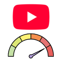
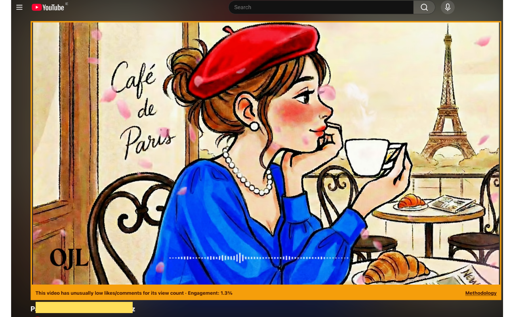
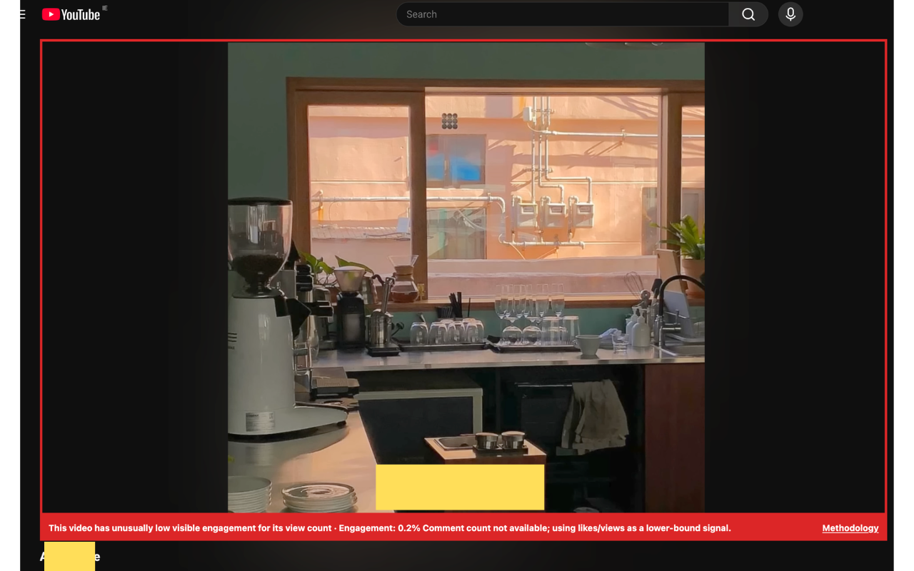
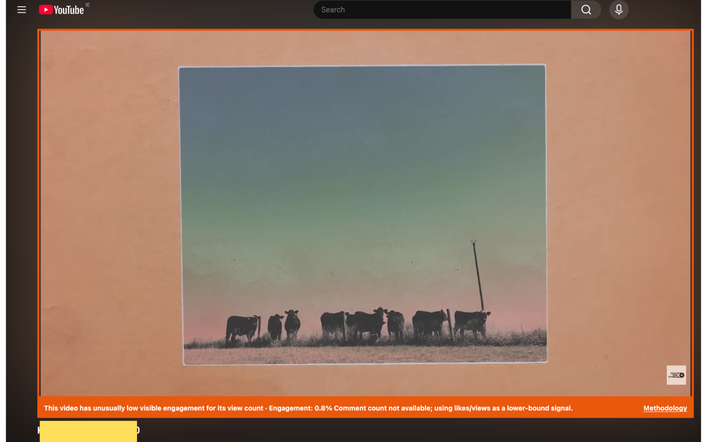
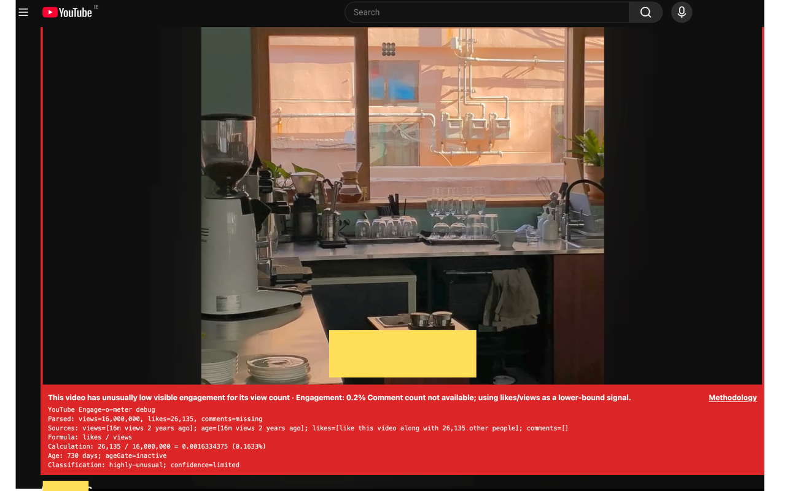
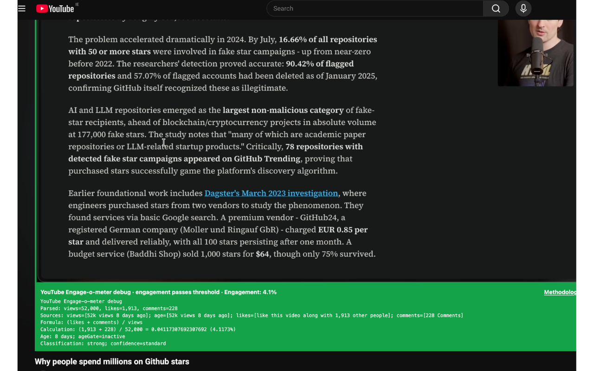

Local Analysis
Engagement scoring happens in the browser on the current YouTube page.

A browser extension that highlights YouTube videos with unusually low visible engagement for their view count.
The idea started after Theo, also known as t3dotgg, made this video about the business of fake GitHub stars and how similar incentives can show up on other social platforms, including YouTube. He pointed viewers to his tweet with practical signs viewers can watch for when a channel may have unusually inflated view counts.
YouTube Engage-o-meter turns that manual calculator work into a local browser signal. It does not claim fraud or bot activity; it simply highlights videos whose visible public engagement looks unusually low for their view count.
YouTube Engage-o-meter runs on YouTube watch pages, reads engagement details that are already visible on the page, and displays an on-page warning when the visible engagement rate appears unusually low.
Engagement scoring happens in the browser on the current YouTube page.
The content script is limited to YouTube video watch pages.




